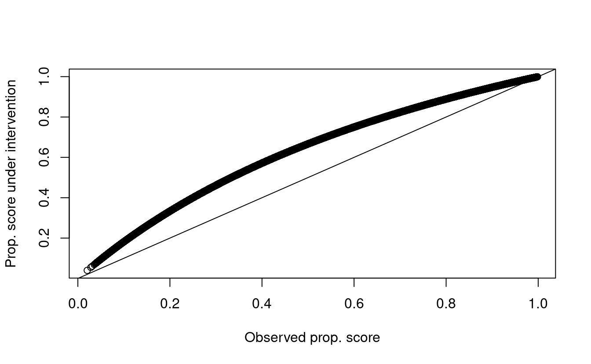

Chapter 3 Stochastic direct and indirect effects
3.1 Definition of the effects
Consider the following directed acyclic graph.

FIGURE 2.1: Directed acyclic graph under no intermediate confounders of the mediator-outcome relation affected by treatment
3.2 Motivation for stochastic interventions
- So far we have discussed controlled, natural, and interventional (in)direct effects
- These effects require that \(0 < \P(A=1\mid W) < 1\)
- They are defined only for binary exposures
- What can we do when the positivity assumption does not hold or the exposure is continuous?
- Solution: we can use stochastic effects
3.3 Definition of stochastic effects
There are two possible ways of defining stochastic effects:
- Consider the effect of an intervention where the exposure is drawn from a
distribution
- For example incremental propensity score interventions
- Consider the effect of an intervention where the post-intervention exposure is
a function of the actually received exposure
- For example modified treatment policies
- In both cases \(A \mid W\) is a non-deterministic intervention, thus the name stochastic intervention
3.3.1 Example: incremental propensity score interventions (IPSI) (Kennedy 2018)
Definition of the intervention
- Assume \(A\) is binary, and \(\P(A=1\mid W=w) = g(1\mid w)\) is the propensity score
- Consider an intervention in which each individual receives the intervention with probability \(g_\delta(1\mid w)\), equal to \[\begin{equation*} g_\delta(1\mid w)=\frac{\delta g(1\mid w)}{\delta g(1\mid w) + 1 - g(1\mid w)} \end{equation*}\]
- e.g., draw the post-intervention exposure from a Bernoulli variable with probability \(g_\delta(1\mid w)\)
- The value \(\delta\) is user given
- Let \(A_\delta\) denote the post-intervention exposure distribution
- Some algebra shows that \(\delta\) is an odds ratio comparing the pre- and post-intervention exposure distributions \[\begin{equation*} \delta = \frac{\text{odds}(A_\delta = 1\mid W=w)} {\text{odds}(A = 1\mid W=w)} \end{equation*}\]
- Interpretation: what would happen in a world where the odds of receiving treatment is increased by \(\delta\)
- Let \(Y_{A_\delta}\) denote the outcome in this hypothetical world
3.3.1.1 Illustrative application for IPSIs
- Consider the effect of participation in sports on children’s BMI
- Mediation through snacking, exercising, etc.
- Intervention: for each individual, increase the odds of participating in sports by \(\delta=2\)
- The post-intervention exposure is a draw \(A_\delta\) from a Bernoulli distribution with probability \(g_\delta(1\mid w)\)
Example: modified treatment policies (MTP) (Dı́az and Hejazi 2020)
Definition of the intervention
- Consider a continuous exposure \(A\) taking values in the real numbers
- Consider an intervention that assigns exposure as \(A_\delta = A - \delta\)
- Example: \(A\) is pollution measured as \(PM_{2.5}\) and you are interested in an intervention that reduces \(PM_{2.5}\) concentration by some amount \(\delta\)
3.3.2 Mediation analysis for stochastic interventions
The total effect of an IPSI can be computed as a contrast of the outcome under intervention vs no intervention: \[\begin{equation*} \psi = \E[Y_{A_\delta} - Y] \end{equation*}\]
Recall the NPSEM \[\begin{align} W & = f_W(U_W)\\ A & = f_A(W, U_A)\\ M & = f_M(W, A, U_M)\\ Y & = f_Y(W, A, M, U_Y) \end{align}\]
From this we have \[\begin{align*} M_{A_\delta} & = f_M(W, A_\delta, U_M)\\ Y_{A_\delta} & = f_Y(W, A_\delta, M_{A_\delta}, U_Y) \end{align*}\]
Thus, we have \(Y_{A_\delta} = Y_{A_\delta, M_{A_\delta}}\) and \(Y = Y_{A,M_{A}}\)
Let us introduce the counterfactual \(Y_{A_\delta, M}\), interpreted as the outcome observed in a world where the intervention on \(A\) is performed but the mediator is fixed at the value it would have taken under no intervention: \[Y_{A_\delta, M} = f_Y(W, A_\delta, M_{A_\delta}, U_Y)\]
Then we can decompose the total effect into: \[\begin{align*} \E[Y&_{A_\delta,M_{A_\delta}} - Y_{A,M_A}] = \\ &\underbrace{\E[Y_{\color{red}{A_\delta},\color{blue}{M_{A_\delta}}} - Y_{\color{red}{A_\delta},\color{blue}{M}}]}_{\text{stochastic natural indirect effect}} + \underbrace{\E[Y_{\color{blue}{A_\delta},\color{red}{M}} - Y_{\color{blue}{A},\color{red}{M}}]}_{\text{stochastic natural direct effect}} \end{align*}\]
3.4 Identification assumptions
- Confounder assumptions:
- \(A \indep Y_{a,m} \mid W\)
- \(M \indep Y_{a,m} \mid W, A\)
- No confounder of \(M\rightarrow Y\) affected by \(A\)
- Positivity assumptions:
- If \(g_\delta(a \mid w)>0\) then \(g(a \mid w)>0\)
- If \(\P(Z=z\mid W=w)>0\) then \(\P(Z=z\mid A=a,W=w)>0\)
Under these assumptions, stochastic effects are identified as follows
The indirect effect can be identified as follows \[\begin{align*} \E&(Y_{A_\delta} - Y_{A_\delta, M}) =\\ &\E\left[\color{Goldenrod}{\sum_{a}\color{ForestGreen}{\{\E(Y\mid A=a, W)-\E(Y\mid A=a, M, W)\}}g_\delta(a\mid W)}\right] \end{align*}\]
The direct effect can be identified as follows \[\begin{align*} \E&(Y_{A_\delta} - Y_{A_\delta, M}) =\\ &\E\left[\color{Goldenrod}{\sum_{a}\color{ForestGreen}{\{\E(Y\mid A=a, M, W) - Y\}}g_\delta(a\mid W)}\right] \end{align*}\]
Let’s dissect the formula for the indirect effect in R:
n <- 1e6
w <- rnorm(n)
a <- rbinom(n, 1, plogis(1 + w))
m <- rnorm(n, w + a)
y <- rnorm(n, w + a + m)- First, fit regressions of the outcome on \((A,W)\) and \((M,A,W)\):
- Get predictions fixing \(A=a\) for all possible values \(a\)
pred_y1_a1 <- predict(fit_y1, newdata = data.frame(a = 1, m, w))
pred_y1_a0 <- predict(fit_y1, newdata = data.frame(a = 0, m, w))
pred_y2_a1 <- predict(fit_y2, newdata = data.frame(a = 1, w))
pred_y2_a0 <- predict(fit_y2, newdata = data.frame(a = 0, w))- Compute \[\color{ForestGreen}{\{\E(Y\mid A=a, W)-\E(Y\mid A=a, M, W)\}}\] for each value \(a\)
- Estimate the propensity score \(g(1\mid w)\) and evaluate the post-intervention propensity score \(g_\delta(1\mid w)\)
pscore_fit <- glm(a ~ w, family = binomial())
pscore <- predict(pscore_fit, type = 'response')
## How do the intervention vs observed propensity score compare
pscore_delta <- 2 * pscore / (2 * pscore + 1 - pscore)- What do the post-intervention propensity scores look like?
plot(pscore, pscore_delta, xlab = 'Observed prop. score',
ylab = 'Prop. score under intervention')
abline(0, 1)
3.5 What are the odds of exposure under intervention vs real world?
odds <- (pscore_delta / (1 - pscore_delta)) / (pscore / (1 - pscore))
summary(odds)
#> Min. 1st Qu. Median Mean 3rd Qu. Max.
#> 2 2 2 2 2 2- Compute the sum \[\color{Goldenrod}{\sum_{a}\color{ForestGreen}{\{\E(Y\mid A=a, W)-\E(Y\mid A=a, M, W)\}}g_\delta(a\mid W)}\]
- The average of this value is the indirect effect
The direct effect is \[\begin{align*} \E&(Y_{A_\delta} - Y_{A_\delta, M}) =\\ &\E\left[\color{Goldenrod}{\sum_{a}\color{ForestGreen}{\{\E(Y\mid A=a, M, W) - Y\}}g_\delta(a\mid W)}\right] \end{align*}\]
Which can be computed as
3.6 Summary
- Stochastic (in)direct effects
- Relax the positivity assumption
- Can be defined for non-binary exposures
- Do not require a cross-world assumption
- Still require the absence of intermediate confounders
- But, compared to the NDE and NIE, we can design a randomized study where identifiability assumptions hold, at least in principle
- There is a version of these effects that can accomodate intermediate confounders (Hejazi et al. 2020)
Rimplementation to be released soon…stay tuned!